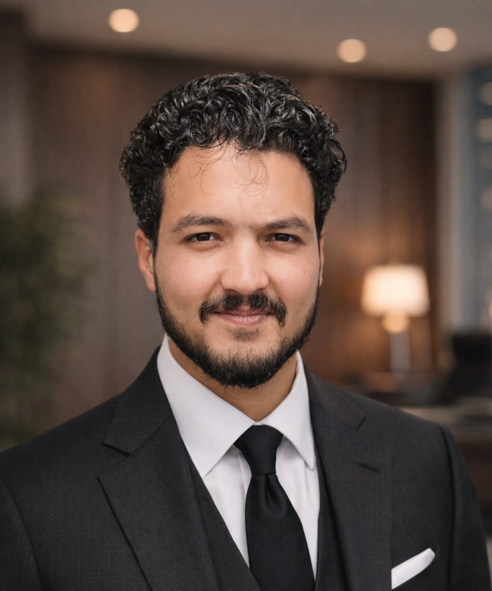

AI for healthcare
Medical image classification, ultrasound workflows and explainable computer vision.
01 / PROFILE
An AI/ML engineer working across computer vision, data science and application development.

MUAZZAM BADSHAH
Based in Islamabad, Pakistan, I work with Python, PyTorch and TensorFlow to prepare datasets, train models and build applications around them. My projects span medical image classification, crop disease detection, cybersecurity and language models.
My experience includes an AI/ML internship at NCAI, NUST, and the 10Pearls SHINE Data Science Internship Program. I’m interested in opportunities where I can contribute to applied AI projects and continue developing my engineering skills.
AREAS OF INTEREST
Medical image classification, ultrasound workflows and explainable computer vision.
Efficient models and offline inference for agricultural applications.
APIs, full-stack interfaces and practical deployment workflows.